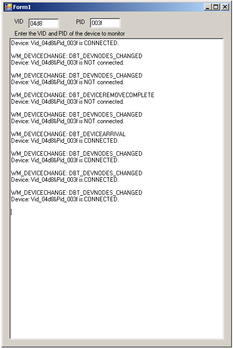

Getting Started: Running the “PC –
WM_DEVICECHANGE” demo
Configuration 1: PICDEM FS USB
Configuration 2: PIC18F87J50 PIM + HPC Explorer
Configuration 1: PICDEM FS USB
Configuration 2: PIC18F87J50 PIM + HPC Explorer
Required Hardware:
To run this project, you will need some kind
of USB peripheral device, with a known Vendor ID (VID) and Product ID (PID). This could be any of the Microchip® USB demo
boards (programmed with functioning USB firmware), or some other type of USB
peripheral device (such as a generic USB mouse). If using one of the Microchip USB demo board
platforms/configurations, the following steps should be followed to prepare the
device for use with the WM_DEVICECHANGE Demo application:
Configuration 1: PICDEM™ FS USB
PICDEM
FS USB (DM163025)
Configuration 2: PIC18F87J50 PIM + HPC Explorer
PIC18F87J50
Plug-In-Module (PIM) (MA180021)
Configuration 3: Explorer 16
PIC24FJ256GB110
Plug-In-Module (PIM) (MA240014)
Explorer
16 (DM240001)
USB
PICtail Plus Daughter Card (AC164131)
Configuring the Hardware:
This
section describes how to set up the various configurations of hardware to run
this demo.
Configuration 1: PICDEM FS USB
Configuration 2: PIC18F87J50 PIM + HPC Explorer
Configuration 3: PIC24FJ256GB110 PIM + Explorer 16
Configuration 1: PICDEM FS USB
1)
If using the PICDEM FS USB Demo Board, no hardware related configuration or
jumper setting changes should be necessary.
The demo board need only be programmed with appropriate firmware.

Configuration 2: PIC18F87J50 PIM
1)
Short JP4 on the PIC18F87J50 PIM. This
allows the demo board to be powered through bus power.

2)
Short JP1 such that the “R” and “U” options are shorted.

Configuration 3: Explorer 16
1)
Before attaching the PIC24FJ256GB110 PIM to the Explorer 16 board, insure that
the processor selector switch (S2) is in the “PIM” position as seen in the
image below.
.JPG)
2)
Short the J7 jumper to the “PIC24” setting
.JPG)
3)
Before connecting the PIC24FJ256GB110 PIM to the Explorer 16 board, remove all
attached cables from both boards.
Connect the PIC24FJ256GB110 PIM to the Explorer 16 board. Be careful when connecting the boards to insure
that no pins are bent or damaged during the process. Also insure that the PIM is not shifted in
any direction and that all of the headers are properly aligned.
4) On the USB PICTail Plus board, short jumper
JP1. Remove all other shorts on the board.
.JPG)
5) Connect the USB PICTail Plus board to either
of the female PICTail Plus connectors or on the card edge connector (J9) at the
edge of the Explorer 16 board.
To
run this project, you will need to load some kind of functioning firmware into
the USB device.
Precompiled
Demos are available in the “<Install Directory>\USB Precompiled Demos”
folders. Each demo hex filename should
include information regarding the hardware platform it is compiled for. Select one of the USB device hex files that
matches the hardware configuration that you plan to use. By default, the WM_DEVICECHANGE_Demo.exe
program will be looking for USB devices with VID = 0x04D8 and PID = 0x003F,
although this can be changed after opening the program. The “USB Device - HID - Simple Custom Demo”
project is by default configured to use VID = 0x04D8 and PID = 0x003F. Therefore, it is suggested that the output
.hex file for this project be used.
For
more information about how to load a precompiled project, please see the
“Getting Started – Loading a precompiled demo” guide.
Before
you can run the WM_DEVICECHANGE_Demo.exe executable, you will need to have the
Microsoft® .NET Framework Version 2.0 Redistributable Package (later versions
probably okay, but not tested) installed on your computer. Programs which were built in the Visual
Studio® .NET languages require the .NET redistributable package in order to
run. The redistributable package can be
freely downloaded from Microsoft’s website.
Users of Windows Vista® operating systems will not need to install the
.NET framework, as it comes pre-installed as part of the operating system.
The
source code for the WM_DEVICECHANGE_Demo.exe file was created in Microsoft
Visual C++® 2005 Express Edition. The
source code can be found in the “<Install Directory>\USB PC - WM_DEVICECHANGE
Demo\WM_DEVICECHANGE Demo - PC Software” directory. Microsoft currently distributes Visual C++
2005 Express Edition for free, and can be downloaded from Microsoft’s website. When downloading Microsoft Visual C++ 2005
Express Edition, also make sure to download and install the Platform SDK, and
follow Microsoft’s instructions for integrating it with the development
environment.
It
is not necessary to install either Microsoft Visual C++ 2005,
or the Platform SDK in order to begin using the WM_DEVICECHANGE_Demo.exe
file. These are only required if the
source code will be modified or compiled.
To
run the demo, simply run the executable by double clicking on it. The executable can be found in the
“<Install Directory>\USB PC - WM_DEVICECHANGE Demo” directory. If the application launches successfully, a
window similar to that shown below should appear:

If
instead of launching successfully, an error message pops up, it is likely that
the Microsoft .NET Framework Version 2.0 Redistributable Package has not been
installed. Please install it and try
again.
Once the application is running correctly, try
connecting and disconnecting your USB device. Try editing
the VID/PID text boxes, and subsequently unplugging/plugging in your USB
device(s). If the VID/PID in the text
boxes match those that are used in the device descriptor inside the device
firmware, this application should be able to detect the device.
When
the Windows operating system detects a Plug and Play event, such as that which
occurs when a USB device is plugged into the PC, the operating system will send
out “WM_DEVICECHANGE” notification messages.
User applications can register to receive these messages, and can
implement callback functions that get executed every time a WM_DEVICECHANGE
notification message is received. The
application can then use these messages to trigger certain activities. For example, an application may wish to open
pipes/get handles to a USB device (with appropriate VID/PID) when it is first
plugged in, and automatically begin sending/receiving data to the device. Alternatively, the application may wish to
terminate any pending I/O operations to the device when it is unplugged, and
close any open handles/data pipes. This
will enable the application to gracefully recover (without restarting the
application altogether) if the user should happen to plug the device back in
again.
The
WM_DEVICECHANGE_Demo.exe program intercepts all WM_DEVICECHANGE notification
messages. There are many different types
of messages, and not all will be related to your USB device. Some messages will be triggered by other
hardware/software within the system.
Therefore, once a WM_DEVICECHANGE notification message is received, the
provided code will: trigger a search for attached USB devices with a given VID/PID,
and update the textbox with the WM_DEVICECHANGE message and info indicating if
the search found the device or not.
Trademarks:
The Microchip
name and logo, the Microchip logo, MPLAB, and PIC are registered trademarks of
Microchip Technology Incorporated in the
PICDEM is a trademark of Microchip Technology Incorporated in the
Microsoft, Windows, Visual Studio, Visual C++, and Windows Vista
are either registered trademarks or trademarks of Microsoft Corporation in the